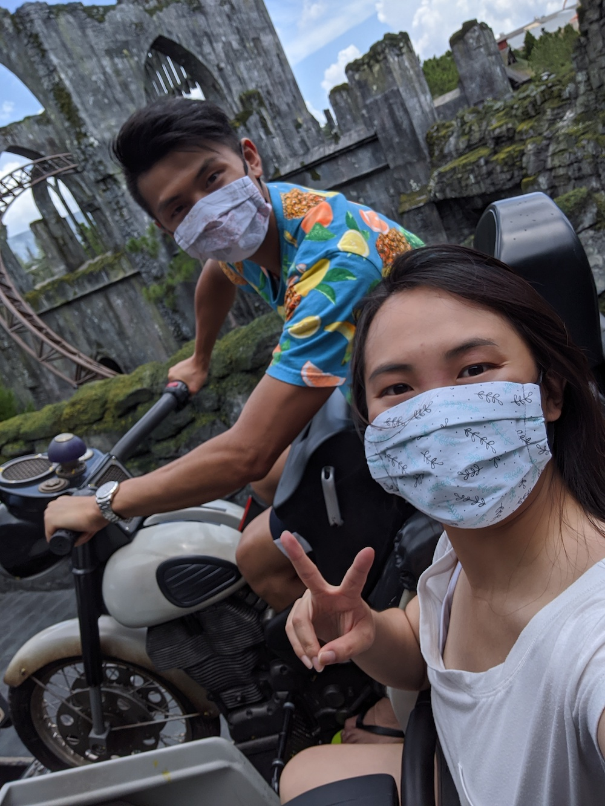
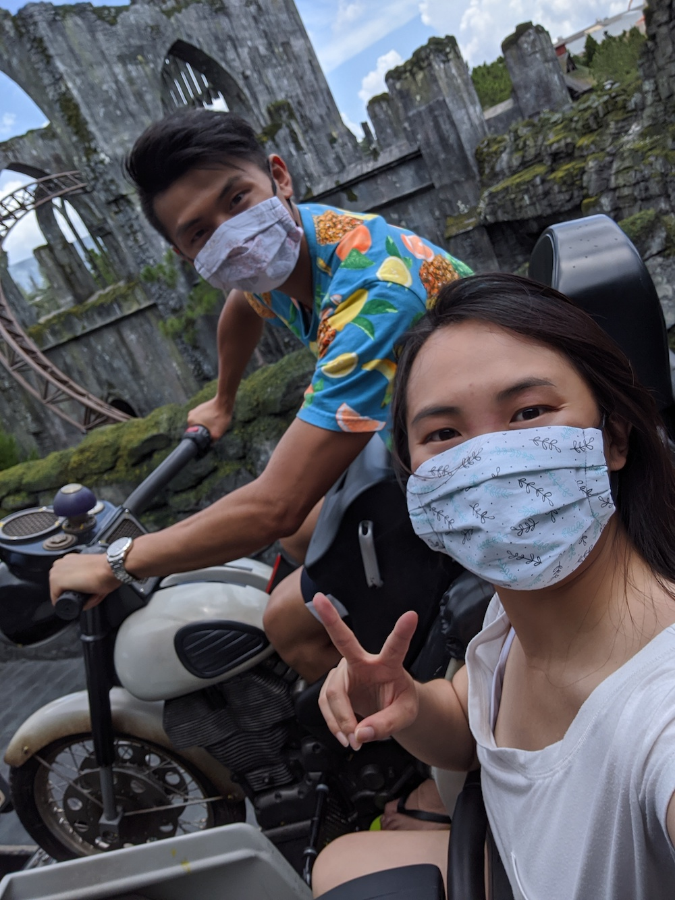

Quarantine Shenanigans
What is this?
In short, a small-wins list of things myself and my crew have been doing to make the most out of our time, safely. This spans to trying new things, supporting each other, and doing our best to stay motivated during the COVID-19 pandemic.
 



A Toast To Making Efforts
This page is a compilation of activities that I have been doing or accomplished during quarantine, along with my family and friends, to keep motivated and stay productive during the COVID-19 global pandemic. Different things work for different people and these happened to have worked for me. I believe in celebrating these small wins and I hope to spread that positivity or inspire others.
3D Printing and Delivering PPE
I was a part of the Universal Orlando Resort efforts, led by the Parks Technology team, to 3D print and deliver personal protectice equipment (PPE) such as face shields and ear guards for Central Florida frontline healthcare workers. I led the Universal Creative team of 8+ 3D printers and drivers to organize prints, filament, and delivery routes to produce dozens of PPE each week over the course of 2 months at the beginning of stay-at-home orders in Central Florida.
Check out the compilation video and blog post detailing our efforts.

Semi-Virtual GTMK 2020 Game Jam
My friends and I participated in this year's Game Makers Tool Kit Game Jam. While some of us participated in the game jam together physically, others worked with us remotely and across timezones as well. We used Discord as our main communication platform and developed our final submission called 'Oh My God!'. Check it out!
Moving Cross-Country
Unfortunately, my role with Universal Creative was eliminated due to COVID-19. I'll miss the crazy awesomeness that was creating world-class location-based attractions, but I knew I gained a lot of experiences from my career that will be put to good use in my next adventure! After collecting myself, within a month's time I created a covid-safe plan, packed my car, and made the roadtrip from Florida to California to pursue my passion in product and user experience design back on the West Coast where I grew up.


Design Portfolio Makeover
With new dreams to make come true, I took the time to completely re-do my design portfolio. Using my fundamental knowledge in HTML and CSS, I put together this site using a UI tool kit. I had quite a lot of fun updating the content as I continue to gather feedback while I pursue my job hunt!
I've also been active on Linkedin Learning to build upon other skills.
A Time for Learning
As part of the COVID-19 efforts, I learned how to sew face masks when supplies were short. I sent batches of my homemade masks to family and friends internationally with the support of my Aunt. I prefer reusable masks to reduce waste.
I'm also trying to pick up the ukulele!
Cafe Quarantine
Who hasn't upped their baking game during quarantine? Myself, I want to improve on my frosting piping skills! I also tried recreating some of the popular cafe drinks at home that are making circles online.


Get Your Heart Rate Up
My friends and I started a virtual fitness group that gets together twice a week over video call to do high intensity interval training (HIIT) workouts. The group kept each other accountable and motivated to keep exercising while socially distanced. Our favorite workouts come from Chloe Ting and Pamela Reif. I also enjoy running through the neighborhood and going on socially distanced hikes.
New Gaming Things
I finally bought my own Nintendo Switch this year and was swept up in the Animal Crossing: New Horizons wave! My friends and I also enjoyed hosting virtual Jackbox Party Game Nights together. It's been a while since I've played religiously, but I'm also determined to finally hit Level 40 (currently lvl 38) in Pokémon Go! I'm looking forward to Nintendo's new Hyrule Warriors: Age of Calamity coming out in November.